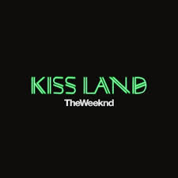
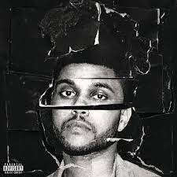
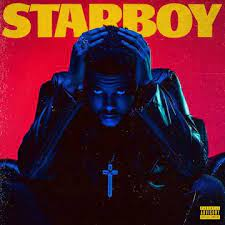
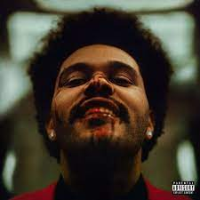
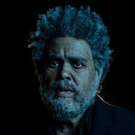

Kiss Land
El primer album de estudio de The Weeknd fue lanzado en 2013 y cuenta con 10 canciones mas dos bonus track. Abel describio a este album diciendo: "Cuando pienso en Kiss Land, pienso en un lugar aterrador. Es un lugar en el que nunca he estado antes, con el que estoy muy poco familiarizado. Eso es lo que Kiss Land es para mí, un ambiente de miedo. No sé quién soy ahora y estoy haciendo todas estas cosas descabelladas en estos entornos que no conozco. Para mí, es lo más aterrador de mi vida."
Beauty Behind Madness
El segundo album de estudio de The Weeknd fue lanzado en 2014 y cuenta con 14 canciones. Este album a comparacion de su antecesor demostro un pop menos oscuro. Los sencillos mas destacados de este album son Often, The Hills y Can't Feel My Face.
Starboy
El tercer album de estudio de The Weeknd. Cuenta con 18 canciones y muchas colaboraciones con reconocidos artistas tales como Daft Punk, Lana del Rey, Kendrick Lamar y Future. En propias palabras de Abel: "El ambiente en Starboy proviene de la cultura hip-hop, el tipo de música que escuchaba de niño. Presumir suena bien, te hace ver como hombre. Como en Scarface, es genial que Tony Montana pueda sobrevivir a todos esos disparos y no sentirlos".
After Hours
El cuarto album de estudio de The Weeknd cuenta con 14 canciones. Los periodistas musicales han señalado el álbum como una reinvención artística, con la introducción de influencias del new wave y dream pop. El arte y la estética del material promocional del álbum han sido descritos como psicodélicos. En este album podemos encontrar grandes exitos como Heartless, Blinding Lights, In Your Eyes y Save Your Tears.
Dawn FM
El quinto album de estudio de The Weeknd cuenta con 16 canciones. Dawn FM tiene una estética de radio psicodélica con temas existenciales. En una entrevista el cantante comentó acerca del álbum diciendo: "Imagina como si el oyente estuviera muerto. Y están atrapados en el tráfico esperando llegar a la luz al final del túnel. Mientras estás atascado en el tráfico, tienen una estación de radio sonando en el auto, con un locutor de radio guiándote hacia la luz. Así que podría parecer una celebración, podría parecer sombrío, como quieras que se sienta."
